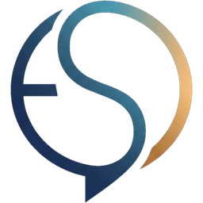

← GERİ

E-Ray Sınav Sistemleri
Sınava Hazırlık Soruları
Ana sayfa
Veli Portalı
Renk teması
ⓘ Bu sayfadaki sorular hazırlık amaçlıdır; resmî sınav değildir. Kazanımlar MEB 2026-2027 İngilizce öğretim programına göredir.
Sayfa yükleniyor…
Bu sayfanın çalışması için tarayıcıda JavaScript açık olmalıdır.